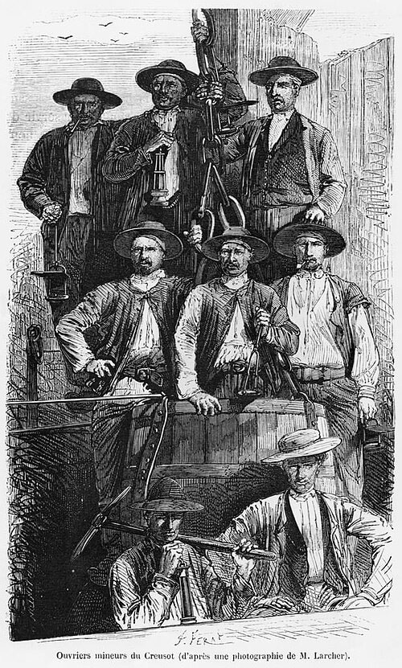
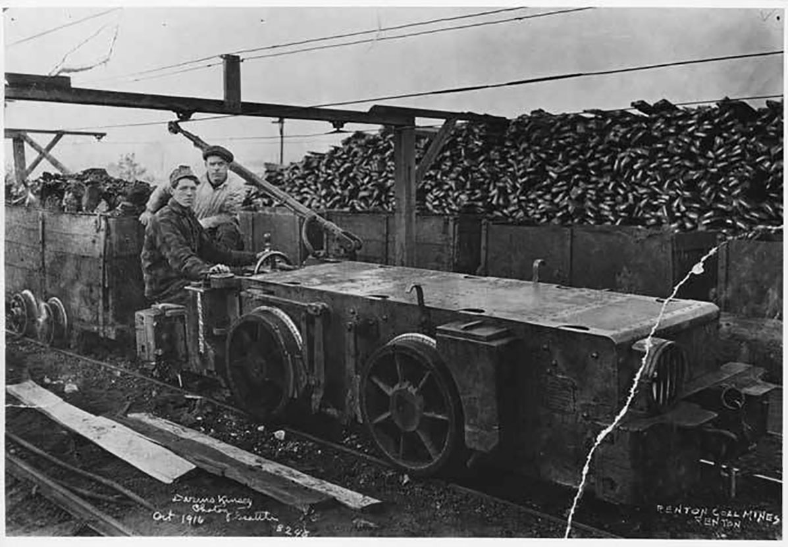
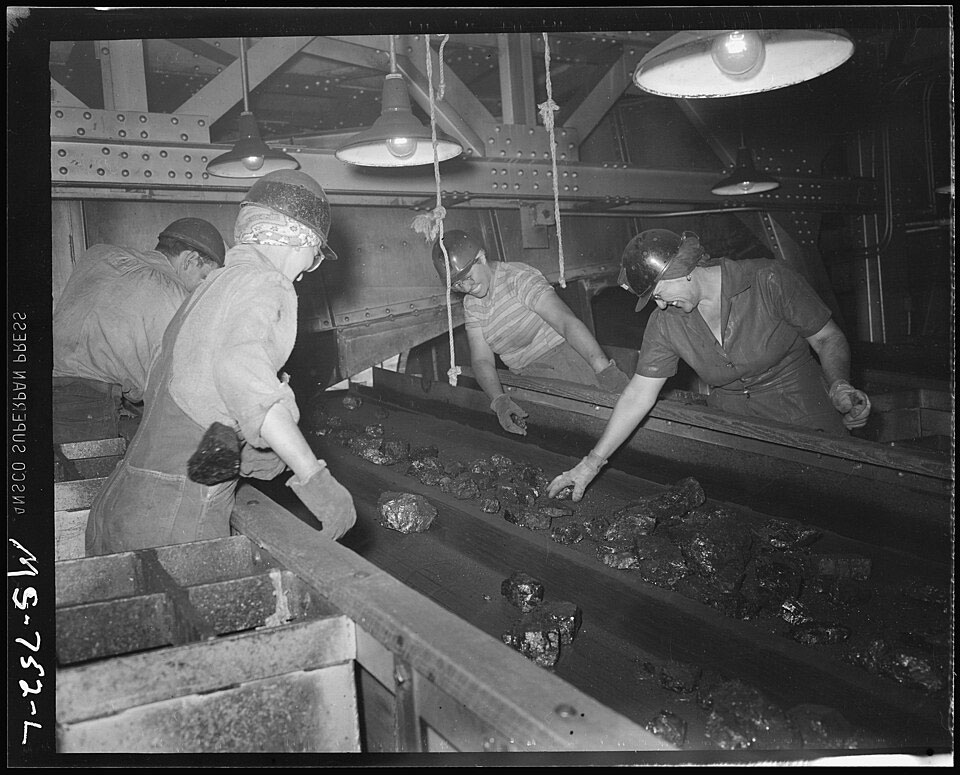
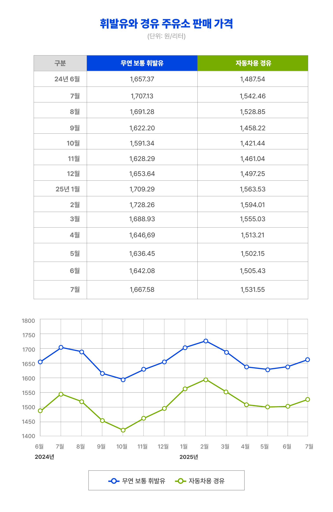
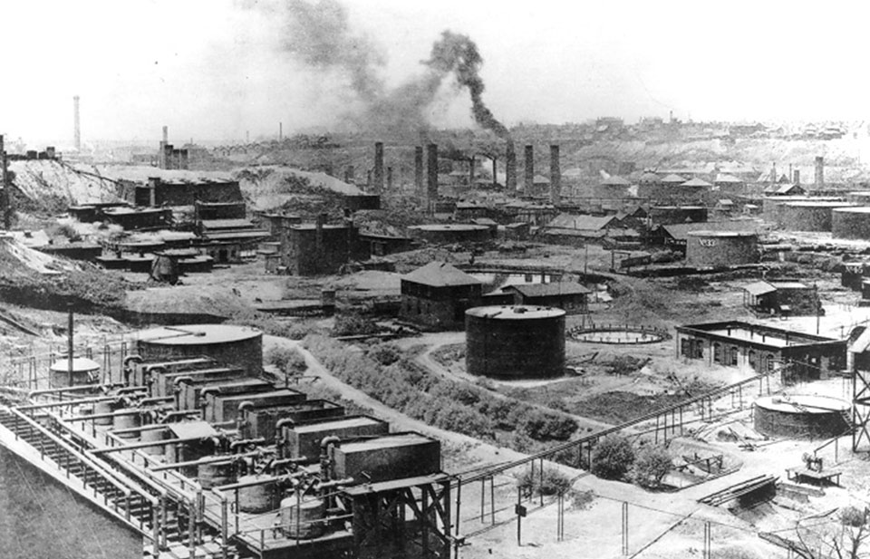
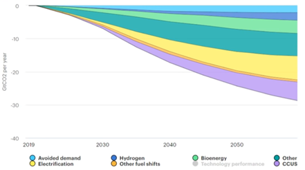
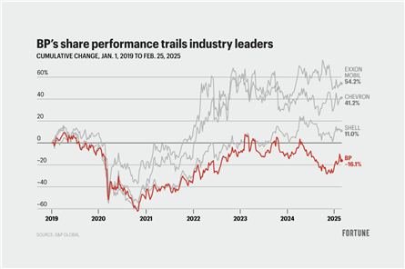

과거 에너지 전환의 역사: 석유도 새로운 에너지였다
인류의 역사는 곧 에너지의 역사라고 할 수 있다. 불의 발견에서부터 수력, 석탄, 석유, 원자력에 이르기까지, 새로운 에너지원의 등장은 언제나 문명의 변화를 이끌었다. 18세기 산업혁명기의 주역은 석탄이었다. 석탄은 철강 생산을 뒷받침하고, 증기기관과 철도의 발전을 가능하게 하며 산업화를 가속시켰다.

1880년경 르 크르조의 광부들,Jules Férat 삽화

1916년 Renton 석탄광의 광부들과 석탄 수레
1946년 석탄에서 불순물을 골라내는 여성들그러나 20세기의 문을 연 것은 석유였다. 석유는 단위 중량당 열량이 높고 액체 상태라 저장과 운송이 용이했으며, 내연기관과 결합하여 자동차·항공기·군수산업에 날개를 달아주었다. 특히 자동차의 대중화와 제2차 세계대전은 석유가 전략적 자원으로 자리 잡는 계기가 되었다. 또한 플라스틱, 합성섬유, 비료, 화장품 등 석유화학 산업의 발달은 현대인의 삶을 근본적으로 바꾸어 놓았다.

석유 산업 초기의 전형적인 석유 저장 시설
1889년 스탠다드 오일 정유공장 전경한때 석유는 석탄을 대체한 ‘새로운 에너지’였으며, 풍요로운 20세기를 가능케 한 주역이었다. 그러나 이제 석유 역시 기후 위기와 에너지 전환이라는 거대한 도전에 직면해 있다.
기후 위기와 지속가능성: 새로운 에너지 전환의 요구
21세기에 들어 지구 온난화가 심각해지면서 에너지 전환은 더 이상 선택이 아닌 생존의 문제가 되었다. 화석연료 사용으로 배출된 이산화탄소는 기후 변화를 가속시켰고, 폭염·홍수·가뭄·산불 등 극한 기상이 전 세계 곳곳에서 발생하며 인류의 삶을 위협하고 있다. 유엔 산하 IPCC와 국제에너지기구(IEA)는 2050년까지 탄소중립을 달성하지 못할 경우, 지구 평균기온 상승을 1.5℃ 이하로 억제하는 것이 사실상 불가능하다고 경고한다[1, 2]. 이에 따라 IEA는 2070년까지 이산화탄소 감축 시나리오를 아래 그림과 같이 제시한 바 있다[3].

지속가능한 발전을 위한 2019–2070 이산화탄소 감축 시나리오[3]
이러한 배경 속에서 각국은 탄소세·배출권거래제와 같은 정책을 도입했고, 기업들도 재생에너지와 청정기술에 투자를 확대하기 시작했다. 태양광과 풍력은 그 중심에 있었다. 2000년 전 세계 발전량의 0.2%에 불과했던 태양광·풍력 비중은 2023년 13.4%까지 급증했다[4]. 이는 기술 발전에 따른 가격 하락과 정부의 정책적 지원이 결합한 결과였다. 그러나 재생에너지가 마냥 장밋빛 미래만을 보여주는 것은 아니다. 태양은 밤이 되면 사라지고, 바람은 불 때만 전력을 공급한다. 낮은 에너지 밀도와 간헐적 공급이라는 구조적 한계는 여전히 해결되지 않은 과제다. 독일의 ‘에너지 전환(Energiewende)’은 대표적 사례로 꼽히지만, 최근 몇 년간 경제 성장 둔화와 전기요금 급등으로 사회적 논란에 직면해 있다[5]. 결국 에너지 전환은 이상과 현실 사이의 균형을 모색해야 하는 어려운 과제가 되고 있다.
글로벌 에너지 기업들의 전략 변화
이 같은 환경 변화 속에서 글로벌 에너지 기업들은 저마다의 해법을
모색해 왔다.
2020년 코로나19 팬데믹 당시 국제 유가가 폭락하자 BP, Shell,
Equinor, TotalEnergies 등 유럽 메이저 기업들은 앞다투어
‘재생에너지로의 대전환’을 선언했다.
필자가 근무했던 BP는 2021~2022년 태양광과 풍력에 공격적으로
투자하고, 재생에너지 인재를 대규모로 영입했다. 그 과정에서 석유
엔지니어와 재생에너지 엔지니어가 한 사무실에서 다소 어색한 공존을
해야 했는데, 이는 석유기업이 얼마나 급격하게 변화를 추구했는지를
잘 보여주는 장면이었다.
그러나 불과 몇 년 만에 상황은 크게 달라졌다.
러시아-우크라이나 전쟁 이후 에너지 안보가 핵심 화두로 떠오르면서
안정적이고 경제적인 석유·가스 자원의 중요성이 다시 강조되었고,
동시에 재생에너지의 낮은 수익성과 투자자 불만이 겹쳤다. 실제로
BP는 최근 청정에너지 투자 목표를 크게 낮추고, 석유·가스 부문에 더
많은 자원을 투입하는 방향으로 전략을 수정했다[6]. Shell 또한
2050년 탄소중립 목표는 유지하되, 단기적으로는 석유·가스 부문에서
창출되는 현금흐름을 중시하겠다는 입장을 밝혔다[7].
반면 미국의 ExxonMobil과 Chevron은 처음부터 재생에너지로의
급격한 전환에 신중했다.
대신 탄소 포집 및 저장(CCS), 수소 등 기존 역량을 살릴 수 있는
기술에 투자하며 안정적 수익 구조를 유지했다[9, 10]. 이 전략은
투자자들의 호응을 얻었고, 최근 두 기업은 사상 최대 규모의 배당과
자사주 매입으로 화제가 되었다.
결국 ‘재생에너지 올인’을 택했던 유럽 기업들은 전략을 재조정해야
했던 반면, 보다 보수적인 접근을 고수한 미국 기업들은 투자자
신뢰를 지켜내는 데 성공했다.
아래 그림은 BP를 포함한 네 곳의 메이저 에너지 기업들의 2019년 이후
주가 변동을 보여주는데, 각 기업의 전략 차이에 따라 유럽계와 미국계
기업 간에 뚜렷하게 다른 흐름과 트렌드가 나타남을 확인할 수 있다.

2019년 이후 메이저 석유기업의 주식 가치 변화[8]
앞으로 석유·에너지 기업이 나아가야 할 길
이제 중요한 질문은 앞으로 석유기업이 어떤 길을 걸어가야 하는가이다. 인공지능(AI) 시대를 맞아 산업과 일상생활 모두가 더 많은 에너지를 요구하고 있으며, 특히 데이터센터의 에너지 수요는 폭발적으로 증가할 전망이다. 따라서 신재생에너지 확대는 물론 중요하지만, 데이터센터와 같은 대규모 수요처에 안정적 전력을 공급하려면 기존 석유·가스 사업의 경쟁력을 유지하고, 그 과정에서 발생하는 환경 비용을 줄이는 노력이 병행되어야 한다. 이를 위한 구체적 접근 방향을 살펴보면 다음과 같다.
첫째, CCS 사업 확대가 현실적 대안이 될 수 있다.
기존 석유·가스 인프라를 활용해 이산화탄소를 지중에 저장하는
방식은 점진적 탈탄소화를 가능하게 한다. 특히 동해 폐가스전을
활용한 CCS 프로젝트를 성공적으로 수행해 한반도 권역의 새로운
이산화탄소 저장소를 확보하는 것은 중요한 과제가 될 것이다.
둘째, 데이터센터 구축에 따른 에너지 수요 증가를 면밀히
예측하고, 이를 충당할 안정적 에너지원 확보가 필요하다.
재생에너지의 간헐성으로 인해 대규모 에너지저장장치(ESS)와
천연가스 발전소의 보완적 역할은 당분간 불가피하다. 늘어나는 수요에
능동적으로 대비할 수 있는 기반 마련이 필수적이다.
마지막으로, 기업의 노력만으로는 충분치 않다. 정부 정책과 제도적
지원, 소비자와 투자자의 인식 변화가 병행되어야 한다.
현실적인 탄소 배출권 가격제, 명확한 규제 환경, 인프라 투자에
대한 정부 지원이 뒷받침될 때 기업 전략도 안정적으로 실행될 수
있다.
석유는 한때 석탄을 대체한 ‘새로운 에너지’였다. 그리고 지금 우리는 석유가 새로운 시대에 어떤 위치를 차지할지 지켜보고 있다. 이번 전환은 단순히 에너지원의 변화가 아니다. 기후 위기라는 인류 공동의 과제 앞에서 석유기업이 어떤 해법을 제시하고 어떤 역할을 담당하느냐가 우리의 미래를 좌우할 것이다. 과거 석유가 문명의 성장 동력이었다면, 앞으로는 지속가능한 에너지 전환의 동반자로서 새로운 역사를 써 내려가야 한다.
[1] IPCC. Global Warming of 1.5°C: Special Report. Intergovernmental Panel on Climate Change, 2018. Available at: https://www.ipcc.ch/sr15
[2] IEA. Net Zero by 2050: A Roadmap for the Global Energy Sector. International Energy Agency, 2021. Available at: https://www.iea.org/reports/net-zero-by-2050
[3] IEA. Energy Technology Perspectives 2020. International Energy Agency, 2020. Available at: https://www.iea.org/reports/energy-technology-perspectives-2020
[4] Lempriere, M. “Wind and Solar are the Fastest-Growing Electricity Sources in History.” Carbon Brief, 2020. Available at: https://www.carbonbrief.org/wind-and-solar-are-fastest-growing-electricity-sources-in-history
[5] KDI. “에너지 전환과 한국 경제에 대한 시사점.” Korea Development Institute, 정책 기고문, 2023. Available at: https://www.kdi.re.kr/share/pressContriView?bd_no=50847
[6] BBC News. “Oil Majors’ Energy Transition in Question.” BBC, 2024. Available at: https://www.bbc.com/news/articles/c3374ekd11po
[7] OilPrice. “European Energy Majors Shift Back to Oil and Gas.” OilPrice.com, 2024. Available at: https://oilprice.com/Energy/Energy-General/European-Energy-Majors-Shift-Back-to-Oil-and-Gas.html
[8] Fortune. “BP’s Strategic Reset and Investor Reactions.” Fortune Magazine, 2025. Available at: https://fortune.com/2025/02/26/bp-stock-price-news-strategy-esg-investor-presentation
[9] Semafor. “ExxonMobil Wants to Build Bespoke Carbon Capture Power Plants for Data Centers.” Semafor, 2024. Available at: https://www.semafor.com/article/12/13/2024/exxonmobil-wants-to-make-bespoke-carbon-capture-power-plants-for-data-centers
[10] Chevron. “Chevron and JX Sign MoU for Collaboration on Development of CCS Value Chain.” Chevron Newsroom, 2024. Available at: https://www.chevron.com/newsroom/2024/q1/chevron-and-jx-sign-mou-for-collaboration-on-development-of-ccs-value-chain